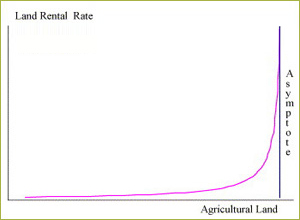
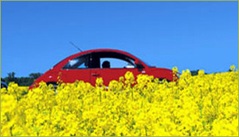
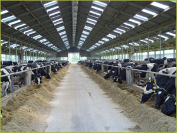
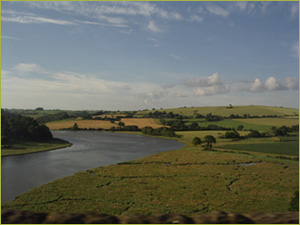
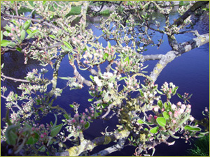

|
The Eururalis project is very challenging from the scientific point of
view. It integrates methodological concepts from different domains such
as economy, demography, land-use and biofysical factors. The links between
the various models and the different temporal and spatial scales has not
only lead to model connections but also it has build connection between
groups of experts that previous did not interact. In future the Eururalis
conceptual framework will be futher developed. In this section the main
improvements for the follow up versions of Eururalis 2.0 are described.
|
|
Land supply curves
| 
|
Land supply curves are new in Eururalis 2.0. In GTAP the total agricultural
land supply was modeled using a land supply curve which specifies
the relationship between land supply and a land rental rate in each
region.
The concept underlying the land supply curve specification is that
the most productive land is first to be taken into production. However,
the potential for bringing additional land into agriculture is limited.
If the gap between potentially available agricultural land and land
used in the agricultural sector is large, then the increase in demand
for agricultural land will lead to land conversion to agricultural
land and a modest increase in rental rates to compensate for the
cost to take this land into production.
|
The problem in Eururalis 1.0 was that GTAP seems to use available land too
fast. This results in land conversion to agricultural land-use where it
is not realistic. Although improvements have been made further study on
this issue is needed.
Elaboration biomass
| In Eururalis 2.0 the production of energy from biomass
is incorporated. This is a complex and new scientific domain where
the energy market, the agricultural market, environmental restrictions
and the availability of resources interact. At the moment only first
generation biomass production is implemented in the Eururalis model
framework. The introduction of second generation and the use of waste
material is needed to get the full picture. Also the impact of biofuel
production to planet indicators and the spatial allocation need further
research. |
 |
Regionalization of models
In order to provide socio-economic indicators at a regional level use of
a regional economic approach, that addresses the full (rural) economy and
not only agriculture, is needed. In many rural regions agriculture only
contributes a low amount to the regional economy. Basically a regional economic
approach requires a nesting of regional modeling within the macro-level
modeling leading to feedbacks between farm/region level conditions/constraints/
opportunities and macro-economic trends at national to global levels. An
innovative approach of dealing with the land resource base is essential
here..
Regionalization is also essential in order to better implement a policy
option dealing with second pillar rural development policies and assess
the consequences of structural change in agriculture for rural livelihoods.
Evolutions and revolutions in Farming Systems
| 
|
Land use change is now a key element in Eururalis. Most of the
meta models for the indicators are ‘driven’ by land
use change. But, over time changes within farming systems might
be of even more importance.
Such change may take place within land use categories. It is about
change of farm intensities, changes in farm structure, changes in
crops grown, changes in management and technology, etc. These changes
all are of major importance to indicate what is happening in European
regions and have an effect on many impact indicators.
|
Farm structure is spatially variable and depends
on many factors. Currently in some indicators assumptions are made on
the development of farming systems and their characteristics in the future.
Moreover, a true representation of farming system change will help to
improve the land use change simulations and calculation of many of the
indicators. Both for the assessment of regional economy, green services
and second pillar policies it is important to have a better understanding
of the changes in farming system/styles and their spatial distribution.
New Policy option: Water Framework Directive
|
The implementation of the Water Framework Directive (WFD) is an important initiative
that is having a major impact on the rural areas. During consultations
with policy makers the implementation of WFD was given high priority.
This is a completely different domain for the Eururalis framework.
It will need implemention of hydrological models. Data availability
is also unclear. Furthermore, not only rural sectors influence the
water quality and quantity, because there is a strong interaction
with urban water use (sewage, energy, industry, drinking water).
|
 |
New policy option: nature

|
Regarding nature many European initiatives (NATURA2000 / High-Nature Value
Farmland Protection / Pan-European ecological corridors / Birds-
and Habitat Directive) have been set up. Most of such measures have
a spatial component aimed at the delineation of areas protected
for nature conservation purposes. For example many second pillar
rural development policies aim at supporting agricultural practices
in order to achieve nature conservation, such as agri-environmental
schemes targeted at NATURA2000 sites or HNV Farmland areas. Packages
of certain policies could be implemented to be evaluated within
the framework. Relevant indicators (biodiversity) are already present
(but could be adapted or linked to the indicators proposed by DG
Agriculture (farmland birds).
|
Furthermore, currently the representation of dynamics in natural systems
is not as detailed as the representation of the agricultural sector. This
leads to some unbalance in the modeling system and the representation
of the dynamics in rural areas, especially because the abandonment of
agricultural land will pose policy questions regarding the future functionality
of such areas.
New policy option: Green services and Second
Pillar policies
Currently these issues are hardly addressed by Eururalis. To address these
issues in a proper manner a better representation of the regional economy
is needed, as well as an improved representation of farming systems and
an identification of landscape functionality.
Potential for green services (non-commodity outputs) and eligibility for
second pillar support needs to be assessed since the adaptation of such
policies is largely dependent on local factors.
New indicator: greenhouse gasses
One important missing ‘planet’ indicator is the emission of
greenhouse gasses. There are several gasses contributing to greenhouse
emissions. Existing models and methodologies should be implemented into
the Eururalis framework to fill this gap. This should include N-emissions
and CO2 emissions from agriculture source. The
first stage should focus on emissions linked to land-use and agriculture.
In a later phase emissions from other sources (transport, industry) could
also be included.
|